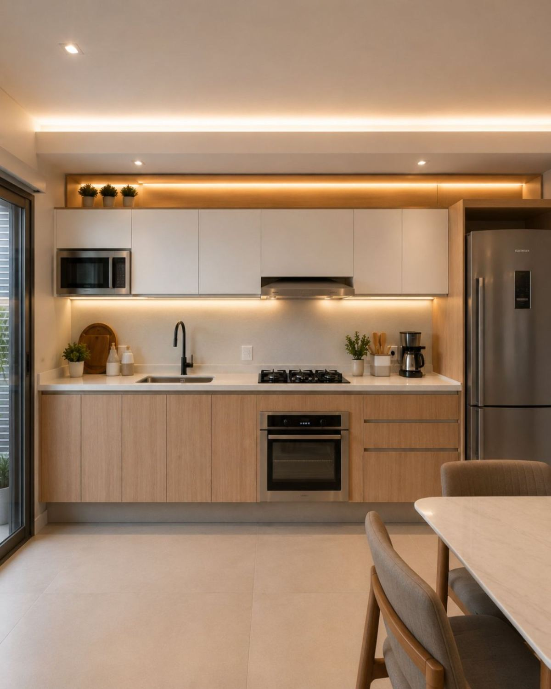
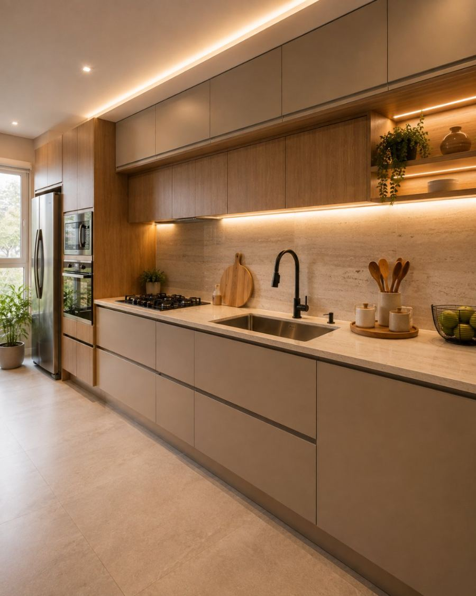
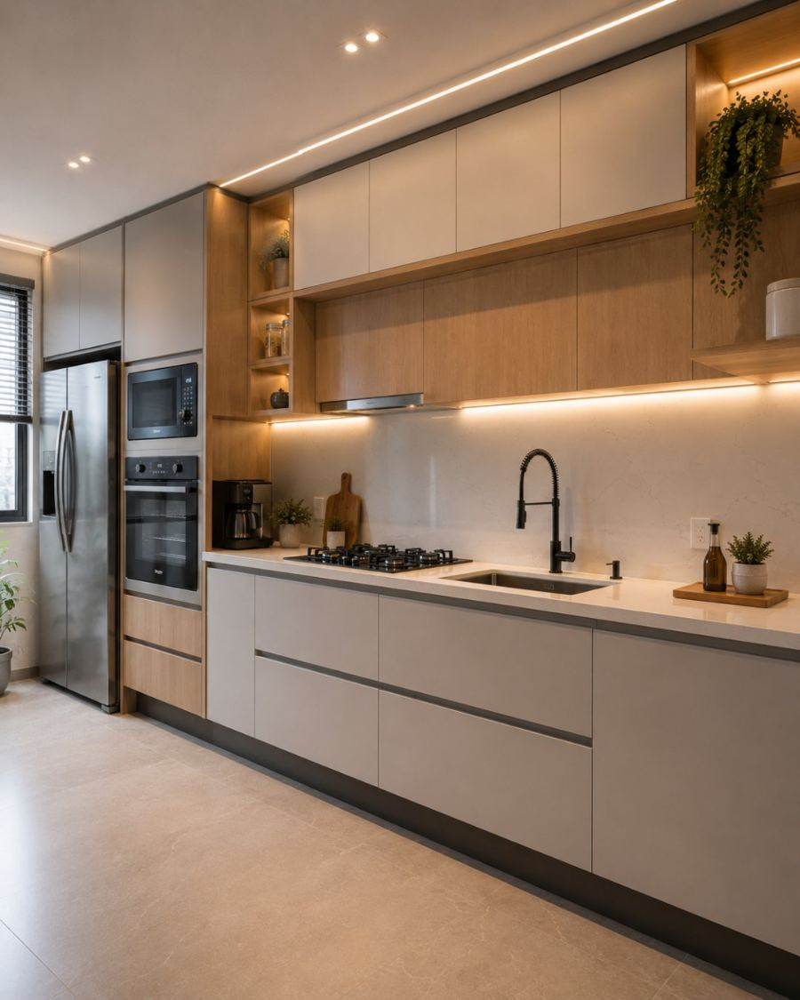

Projetos em MDF para cozinhas de apartamento e de casa: torres, aéreos, ilhas e áreas de serviço dimensionados a partir das medidas reais e da sua rotina na cozinha.
Projetos personalizados · MDF · Atendimento em Londrina, Cambé e região

Feita para o seu apartamento
Projetos que resolvem cozinhas compactas e integradas à sala.
Eletrodomésticos no projeto
Vãos conferidos antes da produção, não improvisados na obra.
Ferragens de uso diário
Gavetas e portas que continuam alinhadas depois de anos de uso.
Londrina, Cambé e região
Medição, produção e instalação com acompanhamento próximo.
O ponto de partida
Uma cozinha planejada precisa funcionar para a sua rotina
Bonita na foto e difícil no dia a dia é o erro mais comum. Antes do desenho, precisamos saber quem cozinha, com que frequência, quantas pessoas circulam ao mesmo tempo e o que precisa ficar ao alcance da mão.
Fluxo entre geladeira, pia e fogão resolvido no projeto, sem cruzamento de circulação.
Panelas, mantimentos e utensílios com lugar definido — não sobra de espaço.
Portas e gavetas que abrem por completo, mesmo em cozinha estreita.

Tipos de cozinha
Cada formato de cozinha pede uma solução diferente
O desenho muda conforme a planta, o pé-direito e a relação da cozinha com os outros ambientes.
Cozinha pequena
Altura total aproveitada, portas que não disputam espaço e armazenamento vertical.
Cozinha de apartamento
Projeto ajustado à planta original, incluindo área de serviço e passagem estreita.
Cozinha ampla
Setorização entre preparo, cocção e apoio, com circulação confortável para duas pessoas.
Cozinha integrada
Marcenaria que dialoga com a sala: mesmo acabamento, transição contínua e menos ruído visual.
Cozinha em L
Canto resolvido com sistema interno adequado, sem transformar o vão em espaço morto.
Cozinha com ilha ou península
Bancada de apoio ou refeição rápida, com armazenamento nos dois lados quando cabe.
Projetos
Referências de cozinha para inspirar a sua
Composições que mostram combinações de acabamento, marcenaria e iluminação que trabalhamos. Fotografias dos projetos executados serão publicadas nesta seção.

Imagem conceitual
Compacta
Cozinha cinza com aéreos e prateleira em madeira
Armários cinza fosco com módulo amadeirado, prateleira aberta iluminada e planta pendente.
MDF cinza fosco · módulo amadeirado · LED branco quente
Sua cozinha pode ser planejada nos mínimos detalhes
Cada decisão abaixo é tomada na etapa de projeto, com você — e é o que separa uma cozinha planejada de um conjunto de armários.
Gavetas
Altura e profundidade definidas pelo que vai dentro: panelas, temperos ou louça.
Divisórias internas
Porta-talheres, separadores e organizadores para cada gaveta ter função clara.
Nichos
Espaços abertos para uso frequente, com iluminação quando fizer sentido.
Torres
Forno, micro-ondas e despensa concentrados em altura confortável de acesso.
Eletrodomésticos
Medidas conferidas antes do corte, com ventilação e ponto de energia previstos.
Portas
Abertura de girar, correr, basculante ou push-to-open conforme o espaço disponível.
Acabamentos
Fosco, amadeirado, vidro ou pedra combinados para o ambiente ler como conjunto.
Ferragens
Dobradiças, corrediças e sistemas escolhidos pelo uso diário, não pelo preço.
Ferragens e uso
Não é só sobre o MDF
A cozinha é o ambiente que mais abre e fecha na casa. O que define a experiência de uso ao longo dos anos não é só a chapa — são as ferragens, os sistemas de abertura e a organização interna.
01
Dobradiças com amortecimento
Fechamento silencioso e portas que permanecem alinhadas com o tempo.
02
Corrediças de abertura total
Você alcança o fundo da gaveta sem tirar tudo o que está na frente.
03
Sistemas sem puxador
Push-to-open e perfis embutidos para frentes limpas e fáceis de limpar.
04
Organização interna
Divisórias, porta-temperos e gaveteiros definidos pelo que você guarda.
05
Iluminação embutida
LED sob aéreos e em nichos, integrado à marcenaria e à bancada de trabalho.
Materiais
O acabamento é escolhido com você, item por item
Cor das frentes, textura, bancada, backsplash e puxador definidos em conjunto — com amostras físicas antes da produção.
Branco fosco
Capuccino fosco
Madeira clara natural
Nogueira
Grafite fosco
Verde profundo
Azul petróleo
Quartzo branco
Amostras ilustrativas. A cor final é conferida em amostra física antes da produção.
Como funciona
Do primeiro contato ao projeto pronto
01
Contato
Você envia o formato da cozinha, as medidas aproximadas e o prazo pelo WhatsApp.
02
Entendimento do ambiente
Conversamos sobre rotina, número de pessoas e o que precisa ficar ao alcance.
03
Desenvolvimento
Desenhamos torres, aéreos, gavetas e vãos de eletrodomésticos e ajustamos com você.
04
Materiais e detalhes
Definição de frentes, bancada, backsplash, puxadores e iluminação com amostras.
05
Produção
Corte, usinagem e montagem seguindo exatamente o projeto aprovado.
06
Instalação
Montagem no local, ajuste de portas e gavetas e conferência dos eletrodomésticos.
Dúvidas frequentes
Perguntas comuns sobre cozinha planejada
É justamente onde o projeto faz mais diferença. Em cozinha compacta cada centímetro conta: altura total aproveitada, tipo de abertura das portas e organização interna transformam o uso diário de um espaço apertado.
Sim. Conferimos as medidas de geladeira, cooktop, forno, micro-ondas e coifa, além de ventilação e pontos de energia, antes de fechar o projeto — para o vão ser exato e não improvisado na instalação.
Sim. Nesses casos a marcenaria é pensada como um conjunto só: acabamento contínuo, alinhamento de alturas e um cuidado maior com o que fica visível a partir do living.
Frentes lisas com perfil embutido ou push-to-open acumulam menos sujeira nas bordas. Entre os acabamentos, os foscos com boa resistência a toque são os mais confortáveis no dia a dia — mostramos as opções em amostra física.
Sim. Em apartamento, cozinha e área de serviço costumam ser resolvidas no mesmo projeto, aproveitando a marcenaria para esconder máquina, tanque e armazenamento de limpeza.
Envie pelo WhatsApp o formato da cozinha, as medidas aproximadas e o prazo que você tem em mente. Retornamos com uma estimativa de preço, sem compromisso.
Área de atendimento
Atendimento em Londrina, Cambé e região
Medição, produção e instalação com acompanhamento próximo, nessas cidades e região.
Orçamento sem compromisso
Conte como é a sua cozinha hoje
Envie o formato da cozinha, as medidas aproximadas e o prazo que você tem em mente. Respondemos com uma estimativa de preço competitivo, sem compromisso.